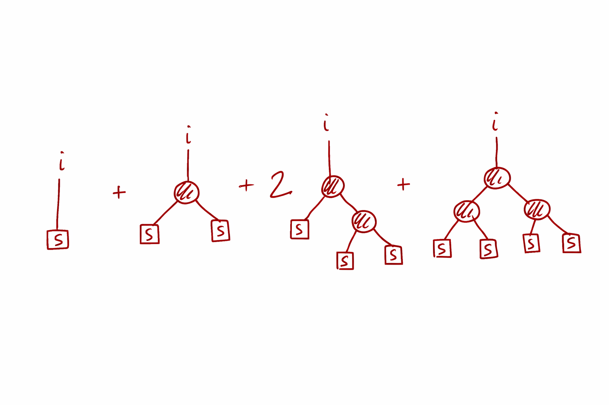

nonlinear algebra • diagrammatics • mean field
Quadratic fixed points, trees, and background fields
March 10th, 2026
The image above is the Ferrara Abbey, a beautiful historical site in Italy. It is known for the invention of the modern musical notes by the friar Guido d'Arezzo, who developed the solfège system that we still use today (do-re-mi-fa-sol-la-ti). It is also the reason why the abbey is often used as a symbol of the origins of music theory and notation (it is for instance in Lucio Dalla's music video Com'è profondo il mare, a masterpiece). The abbey here represents the fact that quadratic fixed points are quite archaic object. The study of their perturbation expansions are a very old and classical topic in mathematics, with roots that go back to the very origins of algebra, yet they still hold many surprises and connections to modern physics and computation. In fact, I don't want you to focus on the abbey in the picture, but on the tree next to it. It really seems close to rooted binary tree, which is exactly what we will see emerges from the perturbation expansion of a quadratic fixed point.
The origin of this post is that recently I've been looking at the behavior of quadratic fixed points in the context of perturbation theory and diagrammatic expansions in memristive networks, together with a student, and previously with a colleague. I thought that some of the points we uncovered were interesting and not widely appreciated, so I decided to write them down in a more general and accessible way. The goal is to discuss and study vector quadratic equations of this form:
$$ \vec x = \vec s + \chi \Omega \vec x^{\odot 2}. $$
Quick notation. The symbol $\odot$ means elementwise multiplication, so $$ \vec x^{\odot 2} = (x_1^2,\dots,x_N^2). $$ In the memristor setting I care about, the source actually lives in the projected subspace ($\vec s\in \mathrm{Range}(\Omega)$) and $\Omega$ is a projector enforcing Kirchhoff constraints, but you don’t need circuit details for what follows.
What matters is that this is a genuinely nonlinear algebraic problem: $N$ quadratic equations in $N$ unknowns. Geometrically you can think of it as the intersection of $N$ quadratic hypersurfaces, so multiple solutions are the default. (Over the complex numbers a generic degree-$d$ system has up to $d^N$ solutions counting multiplicity; here $d=2$, so “up to $2^N$ branches” is the right mental model. Over the reals you can get fewer, and in degenerate cases you can get continua.)
The point of this post is not to solve the most general system head-on. It’s to explain a very specific phenomenon: when you try to solve a quadratic fixed point perturbatively, the algebra forces you into a diagram expansion. The coefficients aren’t random—they are sums over rooted binary trees, with Catalan numbers in the scalar case and indexed tensor contractions in the vector case.
- start with the scalar quadratic and derive its rooted-tree expansion,
- see why that expansion automatically selects only the analytic root,
- recover the other root by reorganizing the expansion around a different background,
- lift the same logic to the $N$-dimensional system via a projector/eigenmode decomposition,
- and show how “many solutions” becomes “many valid diagrammatics”, one per branch.
- 1. The scalar quadratic fixed point
- 2. Where is the second solution hiding?
- 3. The $N$-dimensional quadratic system (from a projector decomposition)
- 4. Tree formula: one branch as a sum over rooted binary trees
- 5. Schwinger–Dyson viewpoint: a self-consistent equation for the fluctuations
- 6. Diagrammatics around a background: solving for $C_0$ and expanding $\delta C_i$
- Takeaway
1. The scalar quadratic fixed point
Consider the fixed-point equation
$$ C = S + \chi C^2. $$
Rearranging gives a quadratic polynomial:
$$ \chi C^2 - C + S = 0. $$
As everyone learns in school, there are two solutions:
$$ C_{\pm}(\chi) = \frac{1 \pm \sqrt{1 - 4\chi S}}{2\chi}. $$
The important point for what follows is not the formula—it’s the branch structure. The two solutions behave very differently as $\chi \to 0$.
Suppose we want a small-$\chi$ expansion. Make the ansatz
$$ C(\chi) = \sum_{n\ge 0} \chi^n C^{(n)}, \qquad C^{(0)} = S. $$
Plugging into $C = S + \chi C^2$ yields the recursion
$$ C^{(n)} = \sum_{m=0}^{n-1} C^{(m)} C^{(n-1-m)}, \qquad n\ge 1. $$
The first few coefficients are:
$$ C = S + \chi S^2 + 2\chi^2 S^3 + 5\chi^3 S^4 + 14\chi^4 S^5 + \cdots $$
The integers $1,1,2,5,14,\dots$ are the Catalan numbers: they count rooted binary trees. We already see that at the level of the single scalar quadratic equations, trees are hidden in the perturbation expansion. Let's try to see why :) Diagrammatically, each factor of $\chi$ corresponds to adding one branching vertex, and each leaf contributes a factor of $S$. We will see this later in this post when we discuss the $N$-dimensional case.
This is the key reconciliation: the rooted-tree sum is not “the” solution. It is the solution that is analytic at $\chi=0$ and satisfies $C \to S$ as $\chi \to 0$.
Indeed, the tree series is exactly the Taylor expansion of
$$ C_{-}(\chi) = \frac{1 - \sqrt{1 - 4\chi S}}{2\chi}, $$
because this is the branch with $C_-(\chi)\to S$ as $\chi\to 0$.
2. Where is the second solution hiding?
The tree expansion we built is a perfectly ordinary Taylor series in $\chi$ around $\chi=0$, so it can only land on branches that stay finite in that limit. That is exactly what happens for $C_-(\chi)$, which satisfies $C_-(\chi)\to S$ as $\chi\to 0$.
The other root, however, is genuinely different: $$ C_+(\chi)=\frac{1+\sqrt{1-4\chi S}}{2\chi} \sim \frac{1}{\chi}-S-\chi S^2-\cdots \quad (\chi\to 0). $$ So it does admit an expansion—just not a power series with nonnegative powers of $\chi$. It is a Laurent / asymptotic expansion with a leading $1/\chi$ divergence. This is why the rooted-tree/Taylor machinery “misses” it: the analytic assumption $C(\chi)=\sum_{n\ge0}\chi^n C^{(n)}$ has already excluded $C_+$.
A clean way to see the same point without solving the quadratic is to change viewpoint. Instead of expanding around the $\chi\to 0$ background $C\approx S$, expand around a different background field $C^0$:
$$ C = C^0 + \delta. $$
If $C^0$ is an exact solution of the undeformed equation, $C^0=S+\chi (C^0)^2$, then inserting $C=C^0+\delta$ gives
$$ \delta = 2\chi C^0\,\delta + \chi\,\delta^2, \qquad\text{or}\qquad (1-2\chi C^0)\,\delta = \chi\,\delta^2. $$
Around an exact root there is no constant forcing term, so the only small solution is $\delta=0$: you are already sitting on that branch. In other words, “choosing a background” is literally “choosing a branch”.
To get a nontrivial perturbation theory you then deform the problem. For instance, perturb the source $S\mapsto S+\varepsilon \Delta S$ and solve for the response $\delta(\varepsilon)$. The linear factor $(1-2\chi C^0)^{-1}$ plays the role of the propagator around the chosen background. If you pick $C^0=C_-(\chi)$ you recover the familiar analytic expansion; if you pick $C^0=C_+(\chi)$ you obtain a consistent expansion on the other branch (typically organized as an asymptotic/Laurent series in $\chi$).
3. The $N$-dimensional quadratic system (from a projector decomposition)
In many problems the scalar quadratic fixed point is really a mode-reduced version of a higher-dimensional equation: you have a vector unknown $x$ (a field, a profile, a mean, …), a source $S$, and a quadratic interaction, but you only “keep” the part of the dynamics that lives in a finite-dimensional subspace. A convenient way to express that is with a projector $\Omega$.
$$ x \;=\; S \;+\; \chi\,\Omega\,\mathcal{Q}(x,x), $$
where $\mathcal{Q}(\cdot,\cdot)$ is bilinear (the quadratic part of your model) and $\Omega$ is a projector: $\Omega^2=\Omega$. Assume the source lives in the range of the projector, i.e. $S=\Omega S$. Then the fixed point necessarily satisfies $x=\Omega x$ as well, so the whole problem closes on the projected subspace.
Choose an orthonormal basis $\{\xi_i\}_{i=1}^N$ for $\mathrm{Range}(\Omega)$. Since $\Omega$ is a projector, it admits the spectral/basis representation
$$ \Omega \;=\; \sum_{i=1}^N \xi_i\,\xi_i^{\mathsf T}. $$
Now expand both the unknown and the source in that basis:
$$ x = \sum_{i=1}^N C_i\,\xi_i, \qquad S = \sum_{i=1}^N S_i\,\xi_i, \qquad S_i := \xi_i^{\mathsf T} S. $$
Plug this into the fixed point equation and project onto the $i$th mode by multiplying on the left by $\xi_i^{\mathsf T}$. Using $\xi_i^{\mathsf T}\Omega=\xi_i^{\mathsf T}$ (because $\xi_i$ lies in the range of $\Omega$), we get
$$ C_i \;=\; S_i \;+\; \chi\,\xi_i^{\mathsf T}\,\mathcal{Q}\!\Big(\sum_{j} C_j\xi_j,\;\sum_{k} C_k\xi_k\Big). $$
Bilinearity of $\mathcal{Q}$ expands the quadratic term into pairwise couplings:
$$ \xi_i^{\mathsf T}\,\mathcal{Q}\!\Big(\sum_{j} C_j\xi_j,\;\sum_{k} C_k\xi_k\Big) \;=\; \sum_{j,k} C_j C_k\,\underbrace{\xi_i^{\mathsf T}\mathcal{Q}(\xi_j,\xi_k)}_{=:~T_{ijk}}. $$
This is where the “interaction tensor” comes from: it is just the quadratic operation expressed in the chosen mode basis. Defining
$$ T_{ijk} \;:=\; \xi_i^{\mathsf T}\,\mathcal{Q}(\xi_j,\xi_k)=\sum_{l} \xi_{i}^{(l)} \xi_{j}^{(l)} \xi_{k}^{(l)} $$
we arrive at the $N$ coupled quadratic fixed-point equations
$$ C_i \;=\; S_i \;+\; \chi\sum_{j,k=1}^N T_{ijk}\,C_j C_k. $$
Finally, it is convenient to repackage the tensor contraction as a bilinear map $B:\mathbb{R}^N\times\mathbb{R}^N\to\mathbb{R}^N$:
$$ (B(u,v))_i := \sum_{j,k} T_{ijk}\,u_j v_k. $$
In this notation the fixed point is the direct vector analogue of the scalar quadratic equation:
$$ C = S + \chi\,B(C,C). $$
Let's now discuss how to write the solution of this in a series form.
4. Tree formula: why one branch is literally a sum over rooted binary trees
There is a precise sense in which “the perturbative branch” of $$ C = S + \chi\,B(C,C) $$ is a sum over rooted binary trees. This is not a metaphor: it is the closed-form combinatorial solution obtained by iterating the fixed point map and bookkeeping the contractions. It is also the cleanest way to see why Catalan numbers, Feynman diagrams, and branch selection all show up together.
Write the equation in components: $$ C_i = S_i + \chi \sum_{j,k} T_{ijk}\,C_j C_k, \qquad (B(u,v))_i := \sum_{j,k} T_{ijk}\,u_j v_k. $$ Assume we want the branch that is analytic at $\chi=0$ and satisfies $C(\chi)\to S$ as $\chi\to 0$. So we look for a formal power series $$ C(\chi) = \sum_{n\ge 0}\chi^n C^{(n)}, \qquad C^{(0)}=S. $$ Substituting and matching powers of $\chi$ gives the universal recursion $$ C^{(n)} = \sum_{m=0}^{n-1} B\!\big(C^{(m)},\,C^{(n-1-m)}\big), \qquad n\ge 1. \tag{$\ast$} $$
The recursion ($\ast$) already contains the tree structure: each $C^{(n)}$ is built by taking two lower-order pieces whose total order is $n-1$, and joining them at one new quadratic vertex (the outermost $B$). Repeating this decomposition until you hit $C^{(0)}=S$ produces a binary rooted tree:

- each application of $B(\cdot,\cdot)$ is an internal vertex (a “binary split”),
- each time you stop the recursion you place a leaf, which contributes $S$,
- the order $n$ coefficient has exactly $n$ internal vertices and therefore $n+1$ leaves.
If you’ve seen QFT perturbation theory, this should ring a bell: a quadratic nonlinearity behaves like an interaction vertex, iterating the fixed point builds tree-level diagrams, and “summing the diagrams” means contracting indices (here) instead of integrating over momenta (there). The extra algebraic twist is branch structure: different solutions correspond to different backgrounds, and changing the background changes the propagator, hence the whole expansion. This is in fact the same combinatorics as tree-level Feynman diagrams: a quadratic interaction generates binary trees, and the Catalan numbers count the underlying shapes. But here we also have indices, so each tree shape comes with a sum over index assignments (contractions) dictated by $T_{ijk}$.
To make the formula explicit, fix a rooted binary tree $\tau$ with $n$ internal vertices. Give every edge of $\tau$ an index label in $\{1,\dots,N\}$. Let the root edge (the outgoing edge at the top) carry the fixed external index $i$. Each internal vertex $v$ has:
- one outgoing edge (toward the root) with index $a_v$,
- two incoming edges (toward the leaves) with indices $b_v$ and $c_v$.
The weight of the vertex $v$ is then the tensor entry $T_{a_v b_v c_v}$. Each leaf $\ell$ ends in a source insertion, contributing a factor $S_{a_\ell}$ where $a_\ell$ is the index on the leaf edge. Summing over all internal edge indices produces the contraction associated with that tree.
With that notation, the coefficient at order $n$ can be written compactly as a sum over trees:
$$ C_i(\chi) \;=\; \sum_{n=0}^\infty \chi^n \sum_{\tau\in\mathcal{T}_n} \;\; \sum_{\text{edge labellings }a:\, \text{root}=i} \Bigg( \prod_{v\in \mathrm{Int}(\tau)} T_{\,a_{\mathrm{out}(v)}\;a_{\mathrm{in}_1(v)}\;a_{\mathrm{in}_2(v)}} \Bigg) \Bigg( \prod_{\ell\in \mathrm{Leaves}(\tau)} S_{\,a_\ell} \Bigg). $$
Here $\mathcal{T}_n$ denotes the set of rooted binary trees with $n$ internal vertices, $\mathrm{Int}(\tau)$ is the set of internal vertices of $\tau$, and the labelling sum runs over all assignments of indices to edges with the root edge fixed to be $i$. (Equivalently: you can sum over indices on internal edges, leaving the root index fixed and letting leaf indices be summed implicitly through the $S_{a_\ell}$ factors.)
If you strip away the indices and set $T_{ijk}\equiv 1$, the only remaining information is the number of tree shapes. Then $C^{(n)}$ is proportional to the Catalan number $C_n$, recovering the familiar scalar story. The tensor $T$ is what turns “counting trees” into “contracting a diagram”. This is the type of structure that I typically love in physics: a universal combinatorial skeleton dressed with model-specific weights. Both statistical physics and quantum field theory are full of this kind of structure, and it is one of the things that makes them so powerful and beautiful.
Also, the beauty of the formula is that it separates universals from model-specific content: the universals are the rooted binary trees (pure combinatorics), while the model-specific content sits entirely in the vertex weights $T_{ijk}$ and the leaf insertions $S_i$. This is exactly what a good diagrammatic expansion should do.
5. Schwinger–Dyson viewpoint: a self-consistent equation for the fluctuations
The background split $C_i=C_0+\delta C_i$ does more than reorganize perturbation theory: it also produces a Schwinger–Dyson–type self-consistency equation. In QFT language, it is the statement that the “full propagator” (here: the linear response of $\delta C$) differs from the bare one by a self-energy generated by the interaction. In our setting it is purely algebraic, but the structure is the same.
Start from the fluctuation equation in operator form
$$ J_{C_0}\,\delta C = (S-\bar S) + \chi\,B(\delta C,\delta C), $$
where $J_{C_0}$ is the background Jacobian and $G_{C_0}:=J_{C_0}^{-1}$ (when it exists) is the background propagator. Apply $G_{C_0}$ to both sides to get the fixed-point form
$$ \delta C = G_{C_0}(S-\bar S) + \chi\,G_{C_0}\,B(\delta C,\delta C). \tag{SD0} $$
Now introduce the (connected) two-point response of the fluctuations to the source. A convenient definition is the derivative with respect to the source components:
$$ \mathcal{G}_{ia} \;:=\; \frac{\partial\,\delta C_i}{\partial S_a}. $$
Differentiate (SD0) with respect to $S_a$. The first term gives the “bare” response $G_{C_0}$, while the second term generates a contribution proportional to $\mathcal{G}$ itself (this is the Schwinger–Dyson closure):
$$ \mathcal{G}_{ia} = (G_{C_0})_{ia} + \chi \sum_{m} (G_{C_0})_{im}\; \frac{\partial}{\partial S_a}\Big(B(\delta C,\delta C)\Big)_m. \tag{SD1} $$
Using bilinearity, $$ \frac{\partial}{\partial S_a} B(\delta C,\delta C) = B\!\Big(\frac{\partial \delta C}{\partial S_a},\delta C\Big) + B\!\Big(\delta C,\frac{\partial \delta C}{\partial S_a}\Big) = B(\mathcal{G}_{\cdot a},\delta C)+B(\delta C,\mathcal{G}_{\cdot a}), $$ where $\mathcal{G}_{\cdot a}$ denotes the vector with components $\mathcal{G}_{ja}$. Plugging this into (SD1) gives
$$ \mathcal{G}_{ia} = (G_{C_0})_{ia} + \chi \sum_m (G_{C_0})_{im}\Big( B(\mathcal{G}_{\cdot a},\delta C)_m + B(\delta C,\mathcal{G}_{\cdot a})_m \Big). \tag{SD2} $$
(SD2) is the finite-dimensional Schwinger–Dyson equation: the response $\mathcal{G}$ appears on both sides because changing the source changes the background solution through the interaction. Diagrammatically, (SD2) resums an infinite family of tree insertions (“dressed propagators”).
If $T_{ijk}$ is symmetric in the two incoming legs, $B(u,v)=B(v,u)$, the two terms coincide and (SD2) simplifies to
$$ \mathcal{G}_{ia} = (G_{C_0})_{ia} + 2\chi \sum_m (G_{C_0})_{im}\;B(\mathcal{G}_{\cdot a},\delta C)_m. \tag{SD2'} $$
You can also package this in the more familiar “Dyson form”. Define the (background-dependent) linear operator
$$ (\Sigma_{\delta})\,u \;:=\; \chi\Big(B(u,\delta C)+B(\delta C,u)\Big). $$
Then (SD2) is equivalent to
$$ \mathcal{G} = G_{C_0} + G_{C_0}\,\Sigma_{\delta}\,\mathcal{G}, \qquad\text{so}\qquad \mathcal{G} = (I - G_{C_0}\Sigma_{\delta})^{-1}G_{C_0}. \tag{Dyson} $$
This is exactly the usual story: $G_{C_0}$ is the “bare” propagator around the chosen branch $C_0$, and $\Sigma_{\delta}$ plays the role of a self-energy induced by the interaction and the actual fluctuation field $\delta C$. Changing the branch (changing $C_0$) changes $G_{C_0}$, and therefore changes the full response $\mathcal{G}$.
6. Diagrammatics around a background: solving for $C_0$ and expanding $\delta C_i$
Let us now see how to organize an expansion around either branch (not just the one analytic at $\chi=0$). The clean way is to pick a background (mean field) and expand in fluctuations:
$$ C_i = C_0 + \delta C_i, $$
with $C_0$ independent of $i$ and fluctuations chosen to have zero mean, $$ \frac{1}{N}\sum_{i=1}^N \delta C_i = 0. $$ Insert this into the fixed point $$ C_i = S_i + \chi \sum_{j,k=1}^N T_{ijk}\,C_j C_k. $$
The background equation should not depend on $i$, so we extract it by summing over $i$. Define the averages
$$ \bar C := \frac{1}{N}\sum_{i=1}^N C_i,\qquad \bar S := \frac{1}{N}\sum_{i=1}^N S_i. $$
With our split $C_i=C_0+\delta C_i$ and zero-mean fluctuations, we have $\bar C = C_0$. Now sum the fixed point over $i$ and divide by $N$:
$$ \frac{1}{N}\sum_i C_i = \frac{1}{N}\sum_i S_i + \chi\,\frac{1}{N}\sum_{i,j,k} T_{ijk}\,C_j C_k, $$ i.e. $$ C_0 = \bar S + \chi\,\frac{1}{N}\sum_{i,j,k} T_{ijk}\,C_j C_k. \tag{$\star$} $$
Expand $C_jC_k=(C_0+\delta C_j)(C_0+\delta C_k)$:
$$ C_jC_k = C_0^2 + C_0(\delta C_j+\delta C_k) + \delta C_j\,\delta C_k. $$
Plugging into ($\star$) gives the exact identity
\[ C_0 = \bar S + \chi\Bigg[ C_0^2\,\underbrace{\frac{1}{N}\sum_{i,j,k}T_{ijk}}_{=:~\bar T} + C_0\,\underbrace{\frac{1}{N}\sum_{i,j,k}T_{ijk}(\delta C_j+\delta C_k)}_{=:~L(\delta C)} + \underbrace{\frac{1}{N}\sum_{i,j,k}T_{ijk}\,\delta C_j\delta C_k}_{=:~Q(\delta C)} \Bigg]. \tag{$\star\star$} \]
This makes the bookkeeping honest: the background equation is obtained by summing over $i$, and the resulting scalar self-consistency condition still contains fluctuation corrections through $L(\delta C)$ and $Q(\delta C)$. The “pure mean-field” closure is the approximation where you drop those fluctuation-dependent terms.
At the pure mean-field level (set $L(\delta C)\approx 0$ and $Q(\delta C)\approx 0$) the background closes to a scalar quadratic:
$$ C_0 = \bar S + \chi\,\bar T\,C_0^2. \tag{$\mathrm{MF}$} $$
This has the two familiar branches (when the discriminant is positive):
$$ C_0^{\pm}(\chi) = \frac{1 \pm \sqrt{1-4\chi\,\bar T\,\bar S}}{2\chi\,\bar T}. $$
Choosing $C_0=C_0^-$ or $C_0=C_0^+$ is therefore already a choice of branch/background. Once that choice is made, the remaining content of the problem is an equation for the fluctuations $\delta C_i$.
To derive it, return to the full fixed point, insert $C_i=C_0+\delta C_i$, and subtract the (mean-field) background equation componentwise. Using $(\mathrm{MF})$ to eliminate the $C_0^2$ term, one finds
$$ \delta C_i = (S_i-\bar S) + \chi\,C_0\sum_{j,k}T_{ijk}(\delta C_j+\delta C_k) + \chi\sum_{j,k}T_{ijk}\,\delta C_j\delta C_k \;+\; \text{(terms enforcing }\tfrac1N\sum_i\delta C_i=0\text{)}. \tag{$\dagger$} $$
The crucial point is that the linearized operator depends on the chosen root $C_0$. Define the Jacobian around the background:
$$ (J_{C_0}\,\delta C)_i := \delta C_i - \chi\,C_0\sum_{j,k}T_{ijk}(\delta C_j+\delta C_k). $$
Then ($\dagger$) becomes the background-field form
$$ J_{C_0}\,\delta C = (S-\bar S) + \chi\,B(\delta C,\delta C) \quad (\text{with } \tfrac1N\sum_i\delta C_i=0). $$
Branch dependence in one line: choosing $C_0^-$ versus $C_0^+$ changes $J_{C_0}$, hence changes the propagator $G_{C_0}=J_{C_0}^{-1}$ (when it exists), hence changes every coefficient in the diagram expansion for $\delta C$.
Once $G_{C_0}$ is defined, you iterate exactly as before: the expansion of $\delta C$ is again a rooted-tree sum, but now internal lines carry $G_{C_0}$, vertices carry $T_{ijk}$, and leaves carry the inhomogeneity $(S-\bar S)$. Same diagrams, different weights—set by the background root you chose.
Takeaway: perturbation theory picks a branch
This started as a toy fixed point, but the point is general. Quadratic self-consistency equations show up everywhere (mean field, message passing, closures), and they almost never have a single “the” solution. They have analytical branches.
A perturbative expansion is therefore not neutral. Expanding in $\chi$ automatically selects the branch that is analytic in $\chi$ (here the one with $C(\chi)\to S$ as $\chi\to 0$). The rooted trees are just the bookkeeping for that choice.
The background-field rewrite makes the choice explicit. Pick a background $C^0$ (ideally an actual solution) $$ C^0 = S + \chi\,B(C^0,C^0), $$ write $C=C^0+\delta$, and you get $$ J\,\delta = \chi\,B(\delta,\delta), \qquad J = I - \chi\big(B(C^0,\cdot)+B(\cdot,C^0)\big). $$ If $J$ is invertible, $G=J^{-1}$ is the linear response around that background. Different $C^0$ give different $J$ and $G$, so the whole expansion changes with the branch.
This is also why the diagrams look like QFT diagrams. Same objects: vertices, propagators, trees. The difference is what you do with an internal line: in QFT you integrate over a momentum; here you sum over an index. So it’s “Feynman diagrams”, but with sums instead of integrals.
One last structural point: we simplified the reduction to the $N$-dimensional system by using that $\Omega$ is a projector, so the relevant subspace is clean and the decomposition is straightforward. You can generalize this: instead of a projector you can work with a spectral decomposition (a sum over eigenvalues/eigenmodes), or even drop symmetry and deal with non-normal/non-symmetric operators. The same basic ideas still apply, but the bookkeeping gets messier (left/right eigenvectors, non-orthogonal modes, Jordan blocks), and the branch structure can become harder to track.
If you want a next step: impose structure on $T_{ijk}$ (symmetries, projectors, low rank, eigenmodes). Then many of these tree sums simplify a lot, sometimes enough to compute them in closed form.